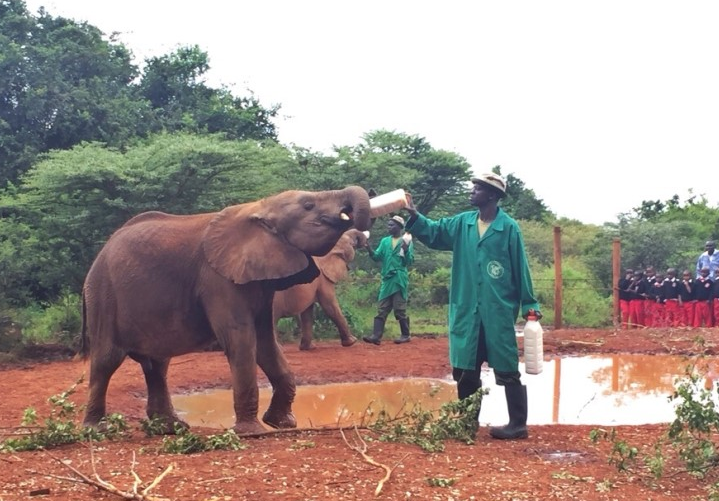
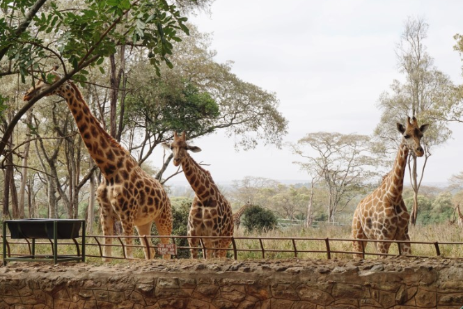
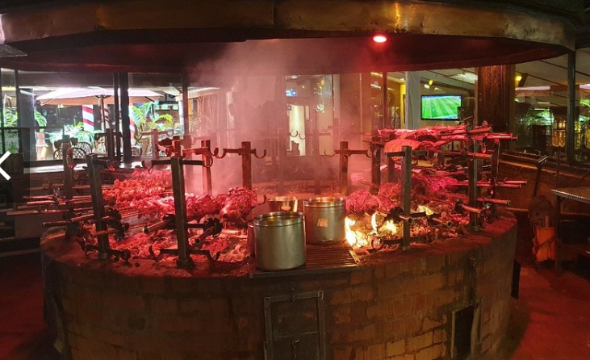
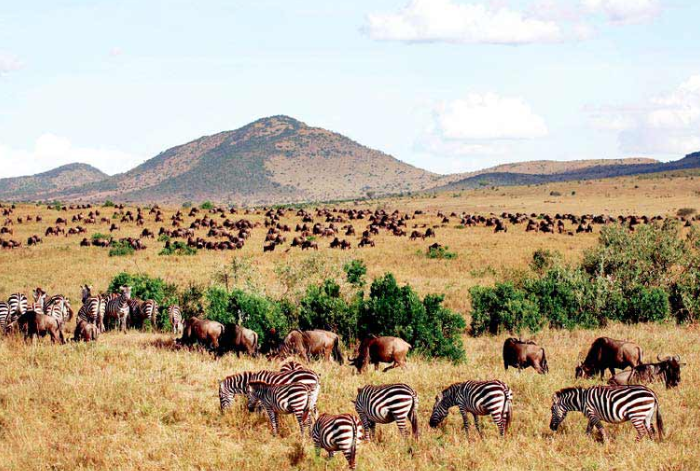

▶ 추천 장소
|  | 무한도전 극한알바편에 나온 코끼리고아원은 오전 11시부터 12시까지만 일반인에게 개방되기 때문에 코끼리고아원을 방문할 계획이 있다면 우선적으로 이곳을 방문하는 일정을 고정해놓고 그에 맞춰 다른 일정들을 조정해 나가는 것을 추천한다. |
|  | 두 번째로, 기린 센터는 기린을 마사이마라 국립공원에서 실컷 볼 수 있지만 그 전에 아프리카의 느낌을 체험해보기 좋은 곳이다. 기린 여러 마리를 보호하고 있는 곳인데 사실 기린센터 안의 기린 개체수는 우리나라 동물원과 별 차이가 나지 않지만 좁은 공간이 아닌, 드넓은 땅을 돌아다니는 기린들을 보고 먹이를 주 수 있다는 점이 다른 포인트라고 생각한다. |
|  | 세 번째로 carnivore 레스토랑은 악어, 타조 등을 포함한 수십 종류의 고기들을 마음껏 맛볼 수 있는 레스토랑으로 그만 달라고 의사표현을 하기 전까지 웨이터들이 고기를 들고다니며 접시에 계속 썰어준다.(고기와 함께 먹을 수 있도록 열 종류가 넘는 소스도 준다.) 고기를 좋아하는 사람이라면 한 번쯤 가보는 것도 좋을 것 같다. |
|  | 마지막으로 케냐와 탄자니아 국경에 걸쳐 펼쳐진 초원을 탄자니아에서는 세렝게티 국립공원, 케냐에서는 마사이마라 국립공원으로 지정해 보호하고 있다. 사냥꾼들로부터 동물들을 보호하기 위해 국립공원으로 지정된 것일 뿐, 모든 동물들은 야생의 상태 그대로이다. 이 공원 안으로 개조한 사파리 차량(뚜껑이 열리는!)을 타고 들어가 동물들을 볼 수 있는데 다큐멘터리로만 보던 바로 그 동물들을 눈 앞에서 볼 수 있어 꼭 가봤으면 한다. |